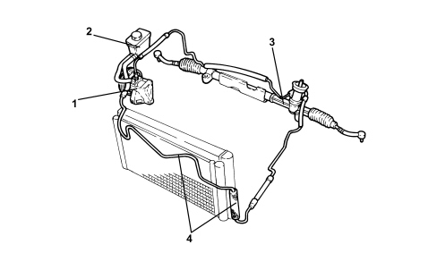
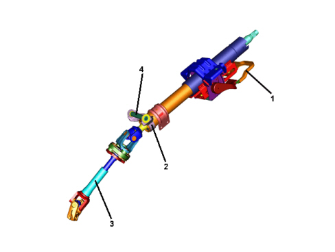
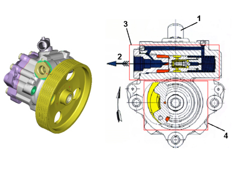
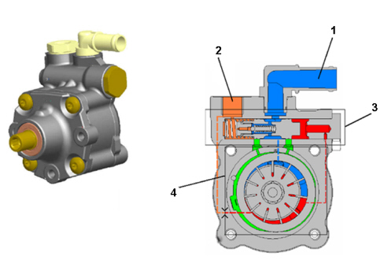
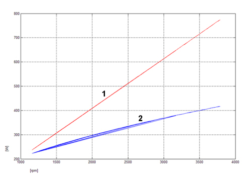

SPECIFICATIONS
The steering control has been designed to guarantee the best performance for the driver during sporty driving together with excellent handling and limited effort during parking manoeuvres.
The development of these objectives, in conjunction with the search for excellent driving comfort, has led to the production of a steering system with the following technical specifications:
- steering wheel turns: 2.33 in total on all versions
- steering ratio: 13.0 steering wheel turns/wheel rotation
- effort on the steering wheel: ~ 4 Nm when steering from stationary
- turning circle: 11.1 m
Driving comfort has been improved by taking care of the sound insulation of the power steering system and using a new design steering wheel and steering column featuring good structural rigidity. In addition, a new type vibrational damper with excellent uncoupling has been fitted on the intermediate steering column shaft.
Lastly, great attention has been paid to passive safety both in terms of the layout, with the movement of the electric steering lock to the front area of the steering column, away from the area of the knees, and with the adoption of a controlled energy absorption collapsing device on the steering column. This, in conjunction with the steering wheel and knee air bags and the retaining belts, makes it possible to produce a five star performance in EUNCAP impact tests.
HYDRAULIC SYSTEM For 4 x 2 version

1. Power steering pump
2. Power steering fluid reservoir
3. Steering box
4. Cooling coil
The hydraulic circuit has a hydraulic pump rotated by the service belt; the pump takes in oil from the reservoir near the pump; the pump supply reaches the steering box; the oil leaving the steering box is sent to the reservoir, passing first through the cooling coil at the side of the radiator.
HYDRAULIC SYSTEM For 4 x 4 version

1. Power steering pump
2. Power steering fluid reservoir
3. Steering box
4. Heat exchanger
The hydraulic circuit has a hydraulic pump rotated by service belts; the pump draws in oil from the reservoir near the actual pump; the pump supply reaches the steering box; the fluid leaving the steering box is sent to the reservoir passing through a heat exchanger first.
STEERING BOX

Designed according to the constant ratio rack and pinion model, the size guarantees a max force of 10.85 KN power assistance.
The mounting supports for the box on the lower frame are designed to break in the event of the crash to maximize the energy absorbed by the body.
STEERING COLUMN

1. Locking lever
2. Electric steering lock
3. Lower cover
4. Mounting bracket on dashboard crossmember
Designed in accordance with a telescopic sleeve layout, it guarantees:
- vertical adjustment with ± 2 degrees of travel,
- axial adjustment with 45 mm of total travel.
The locking lever is located above the upper sleeve, by the lower cover in accordance with the most up to date EUNCAP safety directives.
The electric steering lock, fitted as standard, is housed on the lower steering column cover, by the mounting bracket on the dashboard crossmember.
This means that it is out of the way of the driver''s knees in line with current EUNCAP recommendations. In line with current European legislation, the steering lock guarantees the locking of the steering wheel by means of a special Rencol clutch bush which allows rotation for torques between 100-240 Nm to prevent damaing the mechanical steering components if there is a theft attempt.
The steering column has a controlled energy absorption collapsing device which allows axial travel of 45 mm in addition to the adjustment travel.
HYDRAULIC PUMP
The hydraulic pump with "fixed capacity" in M.Y. 08 versions is replaced with a pump with "variable capacity" (varioserv).
This variable capacity pump has increased performance and reduced the power absorbed.
The following are the features of the two pump types.
Fixed capacity pump

1. Intake
2. Supply
3. Valve unit
4. Rotary unit
Variable capacity pump

1. Intake
2. Supply
3. Valve unit
4. Rotary unit
Comparison between power absorption values (w) of the two pumps

1. Fixed capacity pump
2. Variable capacity pump